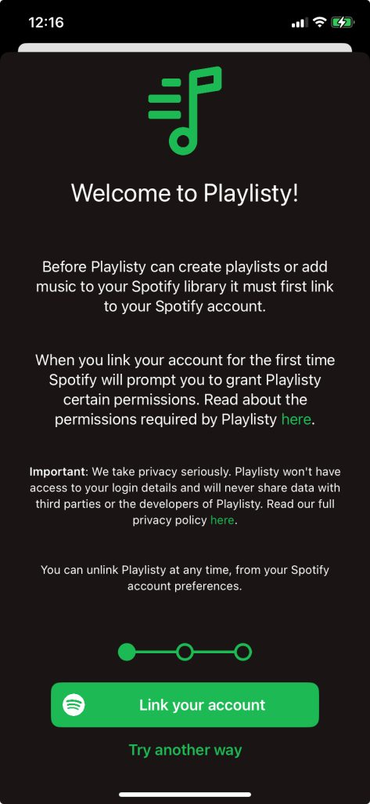

Playlisty uses an industry standard method provided by Apple to connect to your Spotify, YouTube or Deezer accounts. It’s called OAuth 2 and the reason it’s widely used is because of privacy. Specifically, because we use it, there is absolutely no way that Playlisty can see your username or password at any point while you are signing-in to these services.
OAuth 2 on Apple devices uses your default browser to sign-in to the service. This usually works well but it’s true to say that some browsers are more reliable than others and occasionally even the best browsers can get a bit out of step during the OAuth 2 process. Unfortunately this is even more true if you use “Sign-in with Google”, “Sign-in with Facebook” or “Sign-in with Apple”: we have found these methods to be quite hit-and-miss when signing-in with OAuth 2.
Fortunately there are a couple of alternative methods you can use to sign-in if you are having problems with the standard “Link” button. Option 1 is for Spotify only but Option 2 should work with Deezer & YouTube too.
1. Use the “Try another way” button
When you connect to Spotify in “Playlisty for Spotify” you’ll sometimes notice an extra “Try another way” button underneath the “Link your account” button (see below).

If you see this button is usually means that Playlisty has detected that you have installed the Spotify app on your device and if you tap it, Playlisty will try to use the Spotify app to sign-in instead of your browser.
2. Sign-in to Spotify in your browser BEFORE installing Playlisty
This second method works well with Spotify and is also worth trying with YouTube & Deezer:
- Close Playlisty altogether.
- Close Safari (or your default browser) altogether and then re-open it.
- Sign-in to Spotify (or YouTube or Deezer) in your browser at https://open.spotify.com (or https://www.youtube.com or https://account.deezer.com) and make sure everything looks as you would expect e.g. that you are signed-in to the account you expected. Stay signed-in.
- Open Playlisty again, and hit the usual “Link …” button. But DON’T sign-in at this point – just close the sign-in window.
- You’ll get the usual error message here from Playlisty. Just hit the “Go back” button.
- Hit the “Link …” button again. Hopefully this time your sign-in will happen automatically and you’ll be prompted to give Playlisty permission to access your library.
The reason this works is that Playlisty uses a slightly different kind of browser “session” the second time you try to connect which will pick up any pre-existing connections you’ve made. No security details get passed to Playlisty though – it all stays securely in your browser.